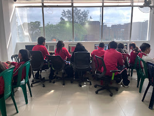
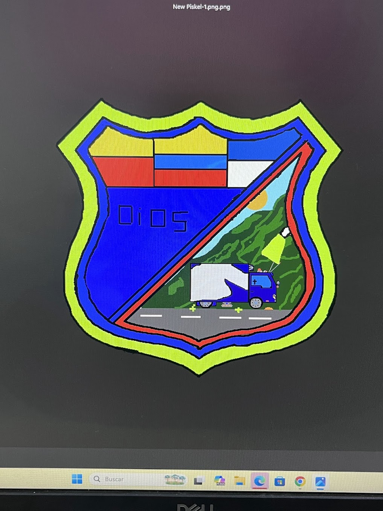
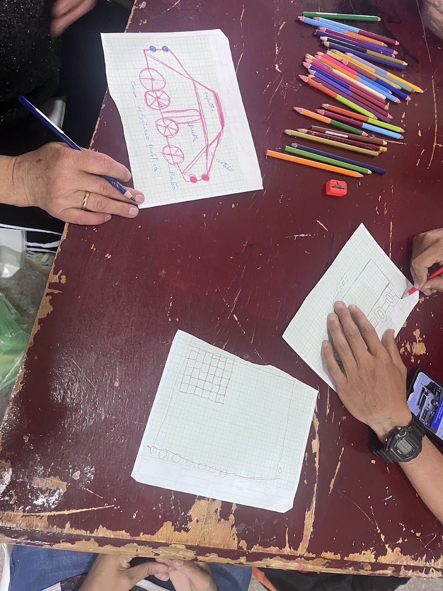
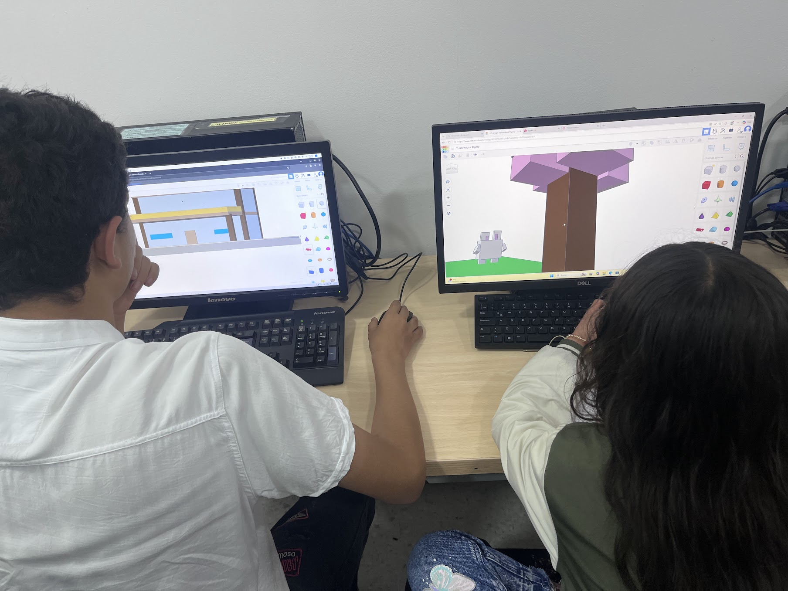
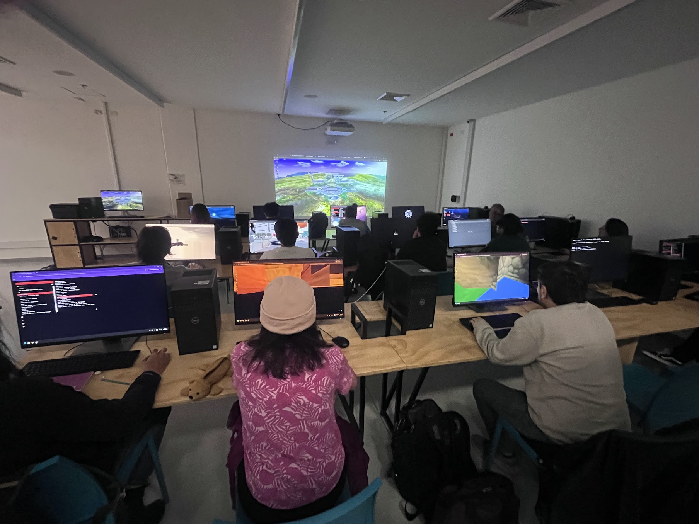
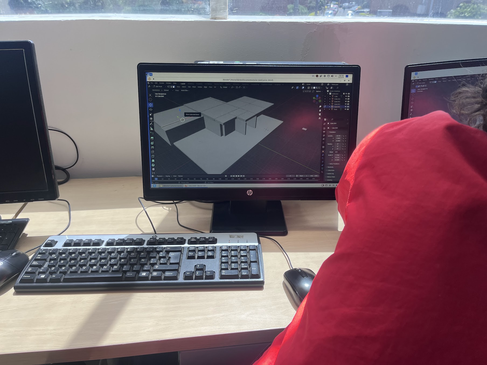
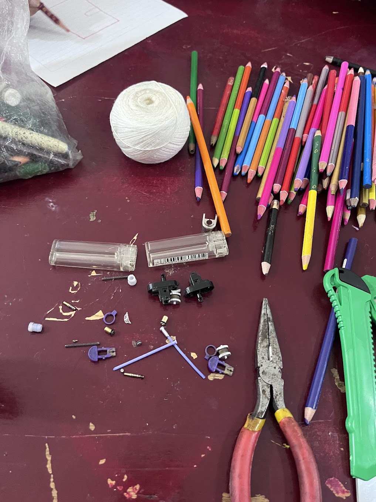
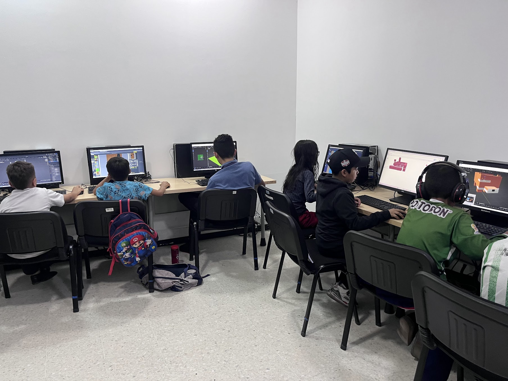
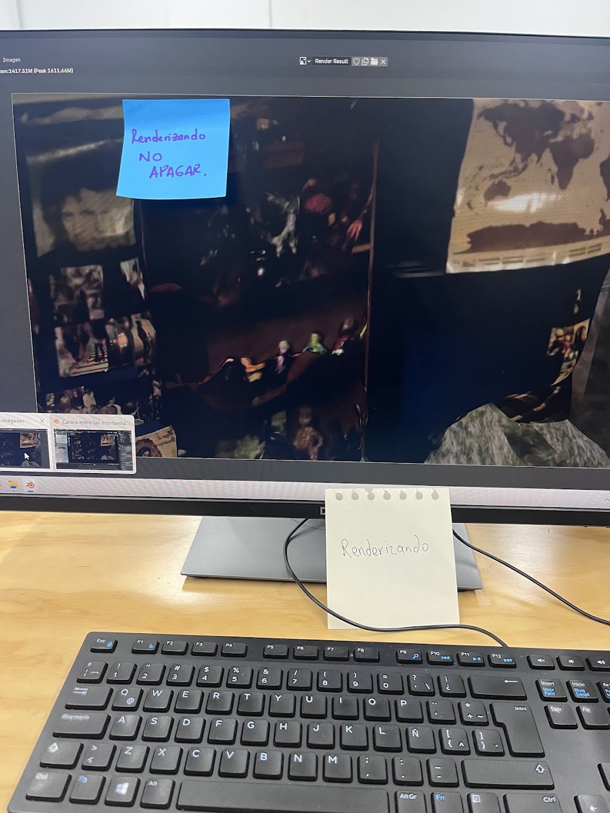
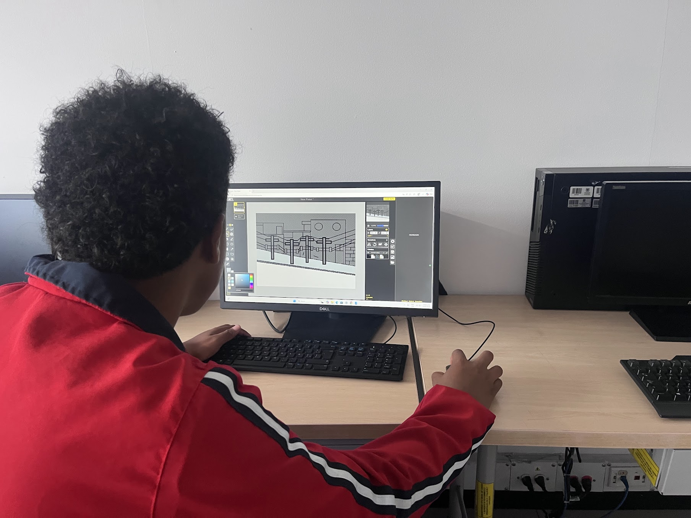

```html
<!DOCTYPE html>
<html lang="es">
<head>
<meta charset="UTF-8">
<title>Bitácora 2026</title>

<style>
body {
  margin: 0;
  background: black;
  overflow: hidden;
  font-family: serif;
}

/* TÍTULO */
#titulo {
  position: fixed;
  top: 20px;
  left: 30px;
  color: white;
  font-size: 26px;
  letter-spacing: 2px;
  z-index: 10;
}

/* CONTENEDOR */
#contenedor {
  width: 100vw;
  height: 100vh;
  overflow: hidden;
  cursor: grab;
}

/* MAPA */
#mapa {
  position: absolute;
  top: 0;
  left: 0;
}

#mapa img {
  width: 1000px;
  display: block;
}

/* PUNTOS */
.punto {
  position: absolute;
  width: 20px;
  height: 20px;
  background: gold;
  border-radius: 50%;
  box-shadow: 0 0 20px gold;
  z-index: 3;
  cursor: pointer;
}

/* PANEL */
#panel {
  position: fixed;
  right: 0;
  top: 0;
  width: 320px;
  height: 100%;
  background: rgba(0,0,0,0.92);
  padding: 20px;
  display: none;
  color: white;
  overflow-y: auto;
}

/* TEXTO */
.fade {
  opacity: 0;
  animation: aparecer 1.5s forwards;
}

@keyframes aparecer {
  to { opacity: 1; }
}

/* PARPADEO */
.parpadeo { animation: blink 1.2s infinite; }
.parpadeo-fuerte { animation: blink 0.4s infinite; }
.parpadeo-raro { animation: blinkRaro 2s infinite; }

@keyframes blink {
  0%,100% { opacity: 1; }
  50% { opacity: 0.2; }
}

@keyframes blinkRaro {
  0%,100% { opacity: 1; }
  10% { opacity: 0; }
  20% { opacity: 1; }
  35% { opacity: 0.3; }
  50% { opacity: 1; }
  70% { opacity: 0; }
  80% { opacity: 1; }
}

/* FINAL */
.final {
  margin-top: 20px;
  font-size: 18px;
}

.error {
  margin-top: 30px;
  font-size: 12px;
  opacity: 0.5;
  animation: blink 1.5s infinite;
}

/* NUEVO */
.clickable {
  cursor: pointer;
  text-decoration: underline;
}

.seccion-oculta {
  display: none;
  margin-top: 10px;
  padding-left: 10px;
  border-left: 2px solid rgba(255,255,255,0.2);
}

.imagen-grupo {
  width: 100%;
  margin-top: 10px;
  border-radius: 6px;
  opacity: 0;
  animation: aparecer 1s forwards;
}
#menu-meses{
  position: fixed;
  bottom: 20px;
  left: 50%;
  transform: translateX(-50%);
  z-index: 20;

  display: flex;
  gap: 10px;

  background: rgba(0,0,0,0.7);
  padding: 10px 16px;
  border: 1px solid rgba(255,215,0,0.3);
  border-radius: 12px;
  backdrop-filter: blur(6px);
}

#menu-meses button{
  background: transparent;
  border: 1px solid rgba(255,255,255,0.2);
  color: white;
  padding: 8px 14px;
  cursor: pointer;
  font-family: serif;
  transition: 0.3s;
}

#menu-meses button:hover{
  border-color: gold;
  color: gold;
  box-shadow: 0 0 10px gold;
}
</style>
</head>

<body>

<div id="titulo">Bitácora 2026 — Stefania Gonzalez</div>

<div id="contenedor">
  <div id="mapa">

    

    <!-- MES 1 -->
    <div class="punto" style="top: 90%; left: 38%;" onclick="mostrar()"></div>

    <!-- MES 2 (ABRIL) -->
    <div class="punto" style="top: 75%; left: 45%;" onclick="mostrarAbril()"></div>

    <!-- MES 3 (MAYO) -->
    <div class="punto" style="top: 70%; left: 57%;" onclick="mostrarMayo()"></div>

    <!-- MES 4 (JUNIO) -->
    <div class="punto" style="top: 58%; left: 59%;" onclick="mostrarJunio()"></div>

  </div>
</div>

<div id="panel"></div>
<div id="menu-meses">
  <button onclick="mostrar()">Marzo</button>
  <button onclick="mostrarAbril()">Abril</button>
  <button onclick="mostrarMayo()">Mayo</button>
  <button onclick="mostrarJunio()">Junio</button>
</div>

<script>

/* TÍTULO */
const titulo = document.getElementById("titulo");
titulo.classList.add("parpadeo-raro");

setTimeout(() => {
  titulo.classList.remove("parpadeo-raro");
}, 2500);

/* MES 1 */
function mostrar() {
  document.getElementById("panel").innerHTML = `
    <h2>Sitio de Gracia — Mes 1</h2>

    <p class="fade">Las señales comienzan a aparecer.</p>

    <p class="fade">
      He encontrado a los
      <span class="parpadeo-raro">tiznados</span>,
      desafiantes del conocimiento, portadores de preguntas aún sin forma.
    </p>

    <p class="fade">
      Nos reunimos al borde de lo
      <span class="parpadeo">conocido</span>,
      donde la imagen aún no se fija y el pensamiento apenas se modela.
    </p>

    <p class="fade">
      Este viaje inicia con la intención de construir,
      de explorar territorios tridimensionales,
      de levantar
      <span class="parpadeo">dioramas</span>
      como rastros de lo que habita en lo cotidiano y lo imaginado.
    </p>

    <p class="fade">
      Las tierras baldías no están lejos.
      Se filtran en la ciudad, en sus grietas,
      en aquello que aún no ha sido observado.
    </p>

    <p class="fade">
      No sabemos aún qué forma tomará este recorrido,
      pero la señal es clara:
    </p>

    <p class="final">
      <span class="parpadeo-fuerte">avanzar</span>, incluso sin mapa.
    </p>

    <p class="fade">La señal no es estable.</p>
    <p class="fade">Algo intenta formarse.</p>

    <p class="error">▮ cruza la niebla ▮</p>
  `;

  document.getElementById("panel").style.display = "block";
}

/* ABRIL */
function mostrarAbril() {
  document.getElementById("panel").innerHTML = `
    <h2>Sitio de Gracia — Mes 2 (Abril)</h2>

    <p class="fade">Las señales se estabilizan lo suficiente para avanzar.</p>

    <p class="fade">
      Los tiznados comienzan a reconocerse dentro del juego.<br>
      No por nombre, sino por movimiento, por duda, por intención.
    </p>

    <p class="fade">
      Se ha iniciado el reconocimiento de la interfaz.<br>
      Los límites del espacio empiezan a revelarse,<br>
      y con ellos, las primeras decisiones.
    </p>

    <p class="fade">
      Cada uno ha comenzado a construir su figura,<br>
      un personaje aún inestable,<br>
      definido por sus intereses, sus búsquedas, sus silencios.
    </p>

    <p class="fade">
      El aprendizaje no es aún de conquista,<br>
      sino de orientación.
    </p>

    <p class="fade">
      Se ensayan los primeros desplazamientos:<br>
      cómo habitar el entorno,<br>
      cómo recorrerlo sin perderse del todo.
    </p>

    <p class="fade">
      Los grupos observan, prueban, se ajustan.<br>
      Reconocen las herramientas,<br>
      los dispositivos,<br>
      y aquello que los vincula entre sí.
    </p>

    <p class="fade">El territorio responde lentamente.</p>

    <p class="fade">Nada está dominado todavía.</p>

    <p class="final">
      Pero el movimiento ha comenzado.
    </p>

    <!-- GRUPO 1 -->
    <p>
      <span class="clickable parpadeo" onclick="toggleSeccion('g1')">
        AE 15226
      </span>
    </p>

    <div id="g1" class="seccion-oculta">
      <p>
        El grupo ha comenzado a reconocerse en medio de la incertidumbre.
        Aunque no todos demuestran una disposición evidente hacia la acción,
        se han permitido habitar la pregunta.
        Han comenzado a cuestionarse quiénes son y qué esperan del devenir de los días,
        abriendo un espacio de diálogo que, poco a poco, ha ido revelando tensiones, intereses y posibles direcciones.
        Esta conversación, aún en construcción, empieza a insinuar el rumbo que podría tomar el proceso creativo colectivo.
      </p>

      
    </div>

    <!-- GRUPO 2 -->
    <p>
      <span class="clickable parpadeo" onclick="toggleSeccion('g2')">
        IC 6776
      </span>
    </p>

    <div id="g2" class="seccion-oculta">
      <p>
        Un grupo que ya se encontraba consolidado ha comenzado a transformarse al abrir sus puertas a nuevos participantes.
        Esta expansión no ha sido solo numérica, sino también simbólica:
        cada integrante ha diseñado su propio escudo, un ejercicio de síntesis donde se condensan intereses, identidades y formas de habitar el mundo.
        A partir de estos emblemas, se ha generado una discusión colectiva que permite reconocer quiénes conforman el grupo,
        qué los mueve y cómo se relacionan entre sí dentro de este territorio compartido.
      </p>

      
    </div>
  `;

  document.getElementById("panel").style.display = "block";
}

/* MAYO */
function mostrarMayo() {
  document.getElementById("panel").innerHTML = `
    <h2>Sitio de Gracia — Mes 3 (Mayo)</h2>

    <p class="fade">
      Los senderos comienzan a definirse entre las Tierras Intermedias.
    </p>

    <p class="fade">
      Algunos tiznados han dejado atrás el vagar incierto y empiezan a levantar estructuras más firmes,
      estableciendo rutas, objetivos y vestigios de aquello que desean invocar dentro del territorio.
    </p>

    <p class="fade">
      Nuevos grupos han emergido alrededor de los Sitios de Gracia,
      portando memorias, dudas y formas distintas de observar el mundo.
    </p>

    <p class="fade">
      Las mesas se llenan de fragmentos tridimensionales,
      artefactos manuales, herramientas desconocidas y registros arrancados del espacio mismo.
    </p>

    <p class="fade">
      Algunos exploran mediante fotogrametrías, intentando capturar ruinas, superficies y rastros del territorio;
      otros reúnen materiales para comenzar el levantamiento de dioramas capaces de contener recuerdos, ficciones y recorridos compartidos.
    </p>

    <p class="fade">
      Ya no todo es exploración.
      <br>
      Lentamente comienzan a aparecer las primeras formas de permanencia.
    </p>

    <p class="final">
      El mapa deja de ser únicamente niebla.
    </p>

    <!-- AS 3601 -->
    <p>
      <span class="clickable parpadeo" onclick="toggleSeccion('m1')">
        AS 3601
      </span>
    </p>

    <div id="m1" class="seccion-oculta">
      <p>
        Un nuevo grupo de tiznados ha comenzado a reunirse alrededor del Sitio de Gracia.
        Aún en reconocimiento mutuo, han comenzado a proyectar posibles artefactos nacidos de la memoria y la nostalgia.
        El sendero parece inclinarse hacia la construcción de juguetes análogos, objetos capaces de activar recuerdos y modos de juego que han marcado la historia de cada viajero.
        Cada integrante empieza a revelar sus propias habilidades mientras las primeras ideas toman forma dentro del taller.
      </p>

      
    </div>

    <!-- IC 6776 -->
    <p>
      <span class="clickable parpadeo" onclick="toggleSeccion('m2')">
        IC 6776
      </span>
    </p>

    <div id="m2" class="seccion-oculta">
      <p>
        Los más jóvenes continúan explorando territorios tridimensionales mientras imaginan mundos posibles construidos a partir de sus gustos, recorridos y espacios cotidianos.
        A través de ejercicios iniciales, el grupo comienza a comprender las herramientas del modelado 3D y las formas en que estas permiten levantar escenarios, criaturas y arquitecturas nacidas de su imaginación.
      </p>

      
    </div>

    <!-- IC 7043 -->
    <p>
      <span class="clickable parpadeo" onclick="toggleSeccion('m3')">
        IC 7043
      </span>
    </p>

    <div id="m3" class="seccion-oculta">
      <p>
        Desde la Cinemateca, el grupo continúa experimentando con fotografía y fotogrametría, aprendiendo a capturar fragmentos del territorio para transformarlos en materia de creación.
        Poco a poco se acumulan registros, superficies y memorias digitales que más adelante servirán para construir dioramas atravesados por recuerdos, reinterpretaciones y visiones alteradas del espacio habitado.
      </p>

      
    </div>

    <!-- AE 15226 -->
    <p>
      <span class="clickable parpadeo" onclick="toggleSeccion('m4')">
        AE 15226
      </span>
    </p>

    <div id="m4" class="seccion-oculta">
      <p>
        El grupo continúa buscando aquello que pueda encender su movimiento.
        Diversos ejercicios han sido desplegados sin fijar todavía un único rumbo, permitiendo que cada integrante explore intereses, recuerdos e imágenes propias.
        Entre las rutas posibles comienzan a aparecer la ilustración y la animación como medios para narrar historias vinculadas a la memoria y las experiencias personales de cada uno de los tiznados.
      </p>

      
    </div>
  `;

  document.getElementById("panel").style.display = "block";
}

/* JUNIO */

function mostrarJunio() {

document.getElementById("panel").innerHTML = `

<h2>Sitio de Gracia — Mes 4 (Junio)</h2>

<p class="fade">
La estación del descanso comienza a extender su influencia sobre las Tierras Intermedias.
</p>

<p class="fade">
Muchos tiznados dirigen su mirada hacia otros horizontes antes de emprender el siguiente tramo del viaje.
Los senderos permanecen abiertos, aunque durante algunos días el tránsito se vuelve más silencioso y disperso.
</p>

<p class="fade">
No toda ausencia significa abandono.
Incluso cuando el campamento parece vacío, las ideas continúan creciendo bajo la superficie,
esperando el momento adecuado para volver a manifestarse.
</p>

<p class="fade">
Los artefactos iniciados durante los meses anteriores comienzan a revelar una identidad propia.
Las búsquedas dejan de ser únicamente exploraciones para convertirse en decisiones conscientes,
y cada grupo empieza a reconocer el propósito de aquello que desea invocar.
</p>

<p class="fade">
Uno de los senderos concluye su recorrido.
Desde la Cinemateca se elevan fragmentos de memoria convertidos en dioramas,
vestigios tridimensionales nacidos de la exploración urbana,
capaces de conservar lugares que solo continúan existiendo gracias al recuerdo de quienes los habitaron.
</p>

<p class="fade">
Otros caminos apenas terminan de encontrar su dirección.
Aunque el ritmo fluctúa,
la gracia continúa guiando el avance.
</p>

<p class="final">
Incluso en tiempos de calma, el mapa continúa escribiéndose.
</p>

<!-- AS -->

<p>

<span class="clickable parpadeo" onclick="toggleSeccion('j1')">

AS 3601

</span>

</p>

<div id="j1" class="seccion-oculta">

<p>

El Sitio de Gracia permanece encendido, aunque las constantes interrupciones del calendario han dificultado que el grupo despliegue todo su potencial.
Entre festividades y procesos de adaptación al espacio que ahora habitan, los tiznados avanzan con cautela, aprendiendo primero a reconocer el territorio antes de levantar grandes construcciones.
A pesar de ello, comienzan a consolidarse las primeras ideas alrededor de los juguetes análogos y de los objetos capaces de despertar memorias compartidas.
Todavía es un sendero que apenas inicia, pero la dirección empieza a hacerse visible.

</p>



</div>

<!-- IC6776 -->

<p>

<span class="clickable parpadeo" onclick="toggleSeccion('j2')">

IC 6776

</span>

</p>

<div id="j2" class="seccion-oculta">

<p>

Los cambios constantes en quienes llegan y quienes parten modifican continuamente el equilibrio del grupo.
Las vacaciones hacen más evidente esta fluctuación, ralentizando por momentos el ritmo colectivo.
Sin embargo, quienes permanecen continúan fortaleciendo una mirada crítica sobre la realidad mediante el modelado tridimensional.
Las herramientas ya no representan un desafío inicial; ahora comienzan a convertirse en un lenguaje desde el cual interpretar el mundo y transformarlo en escenarios posibles.

</p>



</div>

<!-- IC7043 -->

<p>

<span class="clickable parpadeo" onclick="toggleSeccion('j3')">

IC 7043

</span>

</p>

<div id="j3" class="seccion-oculta">

<p>

El recorrido por este territorio llega a su fin dejando tras de sí uno de los vestigios más sólidos del viaje.
A través de la exploración urbana, la memoria y la reinterpretación de los espacios cotidianos, cada participante dio forma a un diorama capaz de contener fragmentos de su propia historia.
Aunque algunos viajeros debieron abandonar el sendero antes de concluir la travesía debido a compromisos laborales o a la falta de tiempo, las piezas construidas conservan la fuerza de aquello que consiguió materializarse.
El Sitio de Gracia queda atrás, pero las huellas permanecerán inscritas en el mapa.

</p>



</div>

<!-- AE -->

<p>

<span class="clickable parpadeo" onclick="toggleSeccion('j4')">

AE 15226

</span>

</p>

<div id="j4" class="seccion-oculta">

<p>

El grupo ha decidido alterar el rumbo de su expedición.
Tras reconocer las necesidades, intereses y posibilidades de quienes integran el colectivo, la ilustración deja paso a un nuevo sendero: la animación digital.
Cada participante comienza a elegir un lugar significativo de su propia memoria para convertirlo en escenario de relatos ficticios, mezclando recuerdos personales con nuevas narrativas.
Aunque en ocasiones la desmotivación propia de la adolescencia ralentiza el avance, este cambio de dirección ha renovado el impulso del grupo, permitiendo que el recorrido continúe con mayor claridad y compromiso.

</p>



</div>

`;

document.getElementById("panel").style.display="block";

}
/* TOGGLE */
function toggleSeccion(id) {
  const el = document.getElementById(id);
  el.style.display = (el.style.display === "block") ? "none" : "block";
}

/* ZOOM + DRAG */
let escala = 1;
let posX = 0;
let posY = 0;
let arrastrando = false;
let inicioX = 0;
let inicioY = 0;

const contenedor = document.getElementById("contenedor");
const mapa = document.getElementById("mapa");

function actualizar() {
  mapa.style.transform = `translate(${posX}px, ${posY}px) scale(${escala})`;
}

contenedor.addEventListener("wheel", function(e) {
  e.preventDefault();
  escala += (e.deltaY < 0) ? 0.1 : -0.1;
  escala = Math.max(0.5, Math.min(3, escala));
  actualizar();
}, { passive: false });

contenedor.addEventListener("mousedown", function(e) {
  arrastrando = true;
  contenedor.style.cursor = "grabbing";
  inicioX = e.clientX - posX;
  inicioY = e.clientY - posY;
});

window.addEventListener("mousemove", function(e) {
  if (!arrastrando) return;
  posX = e.clientX - inicioX;
  posY = e.clientY - inicioY;
  actualizar();
});

window.addEventListener("mouseup", function() {
  arrastrando = false;
  contenedor.style.cursor = "grab";
});

</script>

</body>
</html>
```
